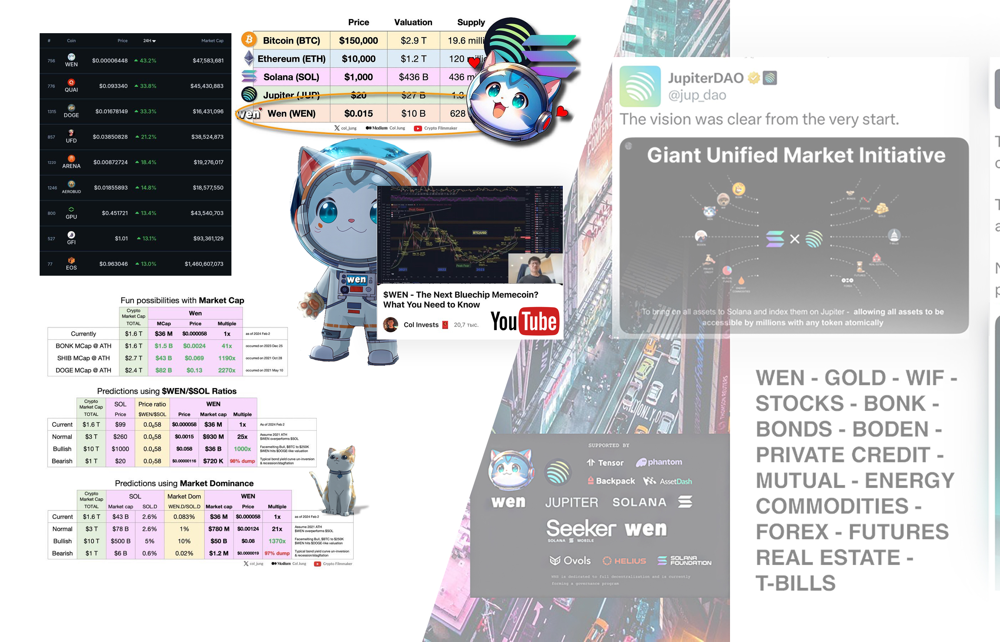

Catlumpurr Kaula Lumpur Malaysia, video about event
Youtube conference about Catlumpur Jupiter Exchange
Some history about
On November 19, 2025, the Solana DeFi ecosystem receives a much-anticipated jolt as Jupiter Exchange hosts its 60th Planetary Call—a recurring community audio/video series that's become a cornerstone for updates, alpha drops, and unfiltered banter in the "Jupiverse." This edition stands out not just for its milestone numbering but for the triumphant return of @weremeow, the enigmatic "cat" behind Jupiter's meteoric rise. Billed as a catch-up on Jupiverse happenings, a deep dive into the vision for Catlumpur, and teaser thoughts on a mysterious "special thing" slated for 2026, the call (streaming live on YouTube via Luma) promises to reignite the $JUP token's momentum amid a choppy market.

Weremeow wow $Jup and $Wen
Weremeow (known as Meow, Twitter: @weremeow) is the pseudonymous founder of Jupiter Exchange, a leading DEX aggregator on Solana, and the creator behind the $WEN meme coin (a community token based on a fractionalized NFT of his poem "A Love Letter to Wen Bros").
Weremeow and Catlumpurr
He continues leading Jupiter's evolution into a "DeFi superapp," hosting events like CatLumpurr and focusing on onboarding the world to decentralized finance.
Weremeow entered crypto several years ago, working on Ethereum projects like Kyber, WBTC, and advising Blockfolio before shifting focus to Solana around 2021.
- He founded Jupiter in October 2021 as a liquidity aggregator to provide the best swap rates on Solana, quickly making it the most popular trading interface in the ecosystem.
- Known for his pseudonymous "cat" persona, he embraces a chaotic neutral style, often communicating philosophically about crypto, community, and money.
- In early 2024, he created $WEN as a cultural meme coin, fractionalizing his poem into a trillion tokens and airdropping it to over a million wallets as a test and tribute to "wen" culture.
- Weremeow launched Jupiter's $JUP governance token in 2024 with one of crypto's largest airdrops, emphasizing community alignment and decentralization.
- He has been outspoken about Solana's advantages for real-world crypto use cases like payments and social transactions.
- Controversies arose around $JUP's launch, including token sale mechanics and airdrop farming, which he addressed transparently, admitting some mistakes.
- In 2025, he reflected publicly on errors like overly trying to please the community in DAO decisions and proposed tokenomics changes like supply reductions.
- Weremeow prioritizes product excellence, community consensus, and long-term vision over short-term hype, viewing tokens as representations of project value.
Catlumpurr Kaula Lumpur Malaysia jan 31 to feb 1 2026, video about event
This is only a small part of what can be discussed at the event Catlumpurr Kaula Lumpur Malaysia jan 31 to feb 1 2026, video about event
CatLumpurr is Jupiter Exchange's community-first summit organized by founder Weremeow, set in Kuala Lumpur, Malaysia, from January 30 to February 1, 2026. Unlike traditional conferences, it emphasizes participation through an unconference format where attendees shape sessions, discussions, and feedback on Jupiter's future. Day 1 features major product announcements and updates from the Jupiter team on developments like the DeFi SuperApp and Jupnet. The event includes pre-event social activities such as yoga, games, pickleball, gym sessions, and community hangs to foster connections. It concludes with an after-party, offering networking, collaboration opportunities for builders, $JUP holders, and Solana enthusiasts, plus travel subsidies for select attendees. CatLumpurr, organized by Weremeow, celebrates Jupiter's community-driven origins, echoing the broad, inclusive airdrop spirit of $WEN Crypto to over a million wallets. The event highlights Weremeow's experimental approach, similar to how $WEN tested innovative mechanisms like the WNS standard before major launches. $WEN embodied "wen" culture and community anticipation, themes that CatLumpurr fosters through participatory unconference sessions on Jupiter's future. As $WEN fractionalized a poem NFT to democratize ownership, CatLumpurr aims to democratize input on DeFi development for attendees. Reflections on past lessons at CatLumpurr draw from experiences like the $WEN launch, emphasizing fair distribution and long-term community alignment.


How Jupiter $JUP came into being and why $WEN Crypto is its Father by co-founder Weremeow
- The $WEN token was created as a precursor experiment to test mechanisms for the upcoming $JUP launch.
- $WEN originated from fractionalizing an NFT of Weremeow's poem using the new Wen New Standard (WNS).
- WNS is a lightweight NFT standard built on Token-2022 for better composability and lower costs.
- WNS enables simple NFT creation by locking supply at 1 token with 0 decimals.
- The poem NFT was minted via WNS and then split into 1 trillion fungible $WEN tokens.
- $WEN served as a proof-of-concept for the WNS fractionalization features.
- The massive $WEN airdrop to over 1 million wallets stress-tested Jupiter's LFG Launchpad.
- This launchpad test ensured smooth infrastructure for the subsequent $JUP token distribution.
- $WEN demonstrated fair, broad community airdrops without favoring whales.
- Lessons from $WEN's WNS implementation and launch directly informed $JUP's community-focused creation.





WNS $Wen standard by co-founder $Jup Weremeow @Weremeow in the x.com
- The Wen New Standard (WNS) will enable significantly lower NFT minting costs on Solana, around 0.01 SOL with full refundability, making creation accessible to more users and projects.
- Built on Token-2022 extensions, WNS ensures future-proof compatibility and seamless integration with evolving Solana ecosystem tools and wallets.
- WNS facilitates easy fractionalization of NFTs into fungible tokens, democratizing ownership of digital art, collectibles, and assets for broader participation.
- It will support expanded use cases beyond memes, including gaming assets, digital collectibles, and enforced royalty distributions for creators.
- Increasing adoption, seen in collections like AssetDash's Elements, positions WNS to drive innovation, efficiency, and composability in Solana's NFT and DeFi landscape.
More about WNS Standart
On the other hand, you need to study what Wen
is before determining the value
$Wen crypto contract id search official – by coinmarketcap.com $wen crypto. Always check ID contract with official sources and exchanges Check which tab you need to view the token contract on coinmarketcap.com How to do it – https://youtu.be/7JgpVGisQbg?si=qiReVZhtwGWxzHIM What is WNS standart Wen New Standart read more ๏ About WEN crypto WNS Standart and Economic ๏ About Wen crypto part 1 ๏ More about $Wen token part 2 ๏ Links about WNS Standart – open links Wen crypto Wen – New AssetDash Mints First 10K NFT Collection on WNS, Boosting WNS Adoption Сollection of open links for truth ๏ WNS NFT Standard – AssetDash – Token 2022 – Token Extensions – The $Wen crypto and $JUP – A stress test $SOL with $Wen for Jupiter's LFG – $JUP airdrop launch Сollection of open links for truth Solana with Wen and Jup Solana Maintains 100% Uptime in $WEN Token Launch, Strengthening WEN Crypto's Role in Solana and Jupiter Ecosystems ๏ Bot mitigation, vital for fair and equitable token distribution on Jupiter's launchpad ๏ Phantom, the biggest wallet by base of user, faced challenges ๏ Solflare and Backpack wallets remained stable and efficient during the peak demand period. You can use all the material for your publications, openly in any form of graphics, without restrictions on copying and uset. The Birth of WNS and Wen Crypto: A Meow-tastic Solana Saga Connect with us: X: https://x.com/JupiterExchange 🔗: https://jup.ag/ In the whimsical world of Solana DeFi, January 2024 marked the genesis of the Wen New Standard (WNS), a lightweight, open-source NFT protocol dreamed up by @weremeow—the pseudonymous "cat" co-founder of Jupiter Exchange, WNS wen new standart, Wen crypto, Jup. Built atop Solana's Token2022 extensions, WNS prioritizes ecosystem composability, flexibility, and backward compatibility, empowering community-driven NFT launches with minimal overhead. It all kicked off with Meow's viral poem, a cheeky "wen moon?" ode to crypto impatience, minted as the inaugural WNS NFT—fractionalized for shared ownership and instant meme magic. Read more about WNS ๏ Wen crypto content video and graphics sources and community https://drive.google.com/drive/folders/1lzzDTDqlgLJKy5YDlEwSE0KWRQfIT7bx?usp=sharing


Official sources and community Wen Crypto
Disclaimer: Disclaimer: The information below represents a prototype of events and is not approved. Therefore, analyze the market independently and take into account the current events, prices, and risks. Please review the current price in real time. This is one of the most powerful and open sources available, all in one place.